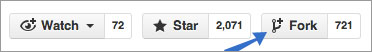

How to Set Up Bundler for Development
-
Fork Bundler
Go to the Bundler Github https://github.com/bundler/bundler
Press the fork button.
Fork Bundler so you can create pull requests with your changes

-
Download a copy of your fork of Bundler
$ git clone https://github.com/user_name/bundler.git -
Change into the Bundler directory
$ cd bundler -
Configure the remote
$ git remote add upstream https://github.com/bundler/bundler.gitThis connects your local repo to the upstream repo at Github.
-
Install Bundler development dependencies
$ rake spec:depsWhat is rake? http://rake.rubyforge.org/
-
Run the Bundler test suite
$ rake specThis could take about 15 minutes.